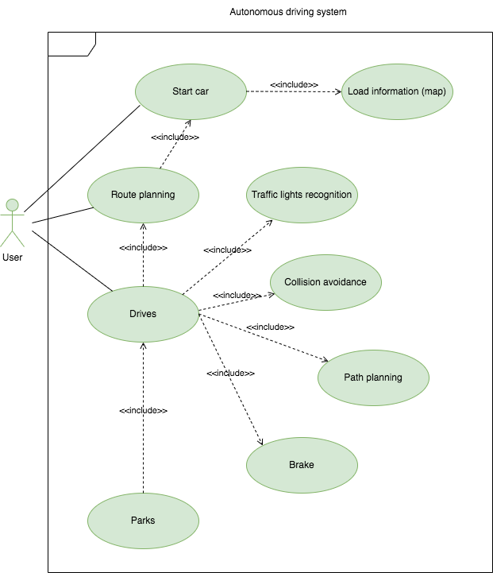

Object Oriented Analysis - Initial Steps towards Programming in Python
Seminar prepartion: Create a use case model which captures the ways in which a user needs to interact with the software system of an autonomous car
In an autonomous car, the interaction between the driver and the car gets reduced to the minimum as the car will try to execute planned actions on it own. Despite this, the driver will enter a destination and then take control of the car if needed. The system will set alarms for situations like collision danger and will start warnings if the driver is not paying atention.

Python excercise 1
As an exercise, write a function called print_time that takes a Time object
and prints it in the form hour:minute:second. Hint: the format sequence '%.2d' prints an integer
using at least two digits, including a leading zero if necessary.
Write a boolean function called is_after that takes two Time objects, t1 and t2, and returns
True if t1 follows t2 chronologically and False otherwise. Challenge: don’t use an if statement.
class Time:
pass
def __init__(self, hour, minute, second):
self.hour = hour
self.minute = minute
self.second = second
t1 = Time(11, 59, 30)
def print_time(t):
print("Hours : %2d, Minutes : %2d, Seconds: t.seconds: %2d" % (t.hour, t.minute, t.second))
def is_after(t1, t2):
seconds1 = t1.hour*3600 + t1.minute*60 + t1.second
seconds2 = t2.hour*3600 + t2.minute*60 + t2.second
return seconds1 > seconds2
t2 = Time(10, 59, 30)
print(is_after(t1, t2))
Python excercise 2 (Supporting different types)
As an exercise, write an add method for Points that works with either a Point object or a tuple:
If the second operand is a Point, the method should return a new Point whose x
coordinate is the sum of the x
coordinates of the operands, and likewise for the y
coordinates.
If the second operand is a tuple, the method should add the first element of the tuple to the x
coordinate and the second element to the y
coordinate, and return a new Point with the result.
class Point:
def __init__(self, x=0, y=0):
self.x = x
self.y = y
def __str__(self):
return str(self.x) + ',' + str(self.y)
def __add__(self, other):
if isinstance(other, Point):
return self.add_points(other)
else:
nx, ny = other
nx, ny = (self.x + nx, self.y + ny)
return coor_to_point(nx, ny)
def add_points(self, other):
nx, ny = (self.x + other.x, self.y + other.y)
return coor_to_point(nx, ny)
def coor_to_point(nx, ny):
point = Point()
point.x, point.y = (nx, ny)
return point
point1 = Point(9, 45)
point2 = Point(11, 55)
tuple1 = (11,55)
print(point1 + (11,55) )